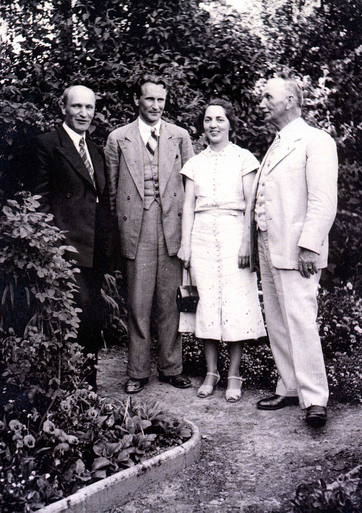

From left to right, the individuals above are: Ernst WYSS, Fritz WYSS, Esther WYSS and Alfred WYSS. Ernst and Fritz were Alfred's nephews by his brother Friedrich WYSS, Esther was his daughter. (Identified by Marlies Wermuth, Alfred Wyss's grand niece).
Last updated on 27 Feb 2001